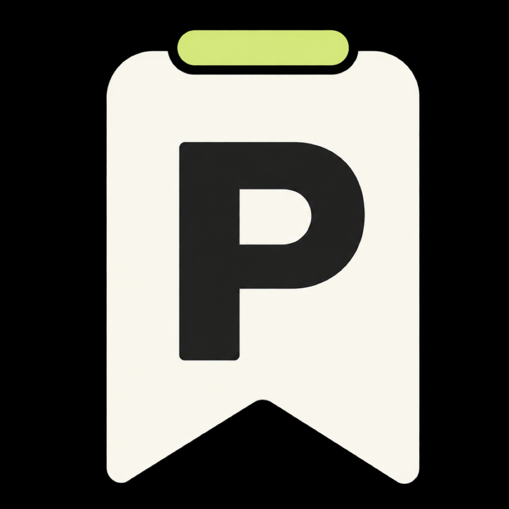

设置上车指令
打开 iPhone「快捷指令」的自动化，选择汽车蓝牙「已连接」，设为「立即运行」，添加泊记的「车辆已连接」动作。
连接车辆 · 开始行程
泊记 ParkMemoGET STARTED
可以随时在泊记「设置 → 进入引导」中
重新查看完整操作教程。
打开 iPhone「快捷指令」的自动化，选择汽车蓝牙「已连接」，设为「立即运行」，添加泊记的「车辆已连接」动作。
连接车辆 · 开始行程再创建一个汽车蓝牙「断开连接」自动化，选择「立即运行」，添加泊记的「车辆已断开」动作，以便下车时保存停车记录。
断开车辆 · 记住停车在泊记引导中设置常用停车地点，并按提示开启定位权限。驶入设置的区域时，泊记可记录用于估算停车楼层的气压参考。
添加地点 · 辅助楼层识别蓝牙自动化需在你的 iPhone 上手动创建。系统版本不同，选项名称可能略有差异。
A LITTLE HELP
请检查汽车蓝牙的连接、断开两条自动化，确认都选择了正确的泊记动作并设为「立即运行」。进入或离开停车区域本身不会保存停车，断开动作或手动保存才会记录。也请在 iPhone 设置中检查泊记的定位权限；必要时可先在 App 内手动记录。
楼层不准确或显示未知时，请及时手动修正为实际楼层。泊记会学习你的修正；随着你持续、及时地校准，楼层识别会越来越准确。
这表示停车瞬间没有取得符合要求的新定位，泊记使用了同一次行程中最近的可信位置。该位置是近似参考；可以结合停车照片与楼层寻找车辆。如果没有可用定位，记录仍会保存，但无法启动导航。
在已停车的首页或手动记录页面，通过相机或系统照片选择器添加照片。建议拍下车位编号、附近立柱或电梯入口。照片可以全屏查看或替换，历史记录也会显示对应缩略图。
请先打开泊记并保存一条停车记录，再从 iPhone 主屏幕添加泊记小组件。通知需要同时开启泊记设置中的开关和 iPhone 系统通知权限；自动停车保存成功后才会发送通知，手动记录或修改楼层不会重复通知。
泊记默认跟随 iPhone 的语言。也可从泊记「设置 → 语言」前往系统的 App 语言设置。支持简体中文、英语、日语、法语、意大利语、韩语、德语和西班牙语。
暂时没有匹配的答案。换个关键词，或直接联系开发者。